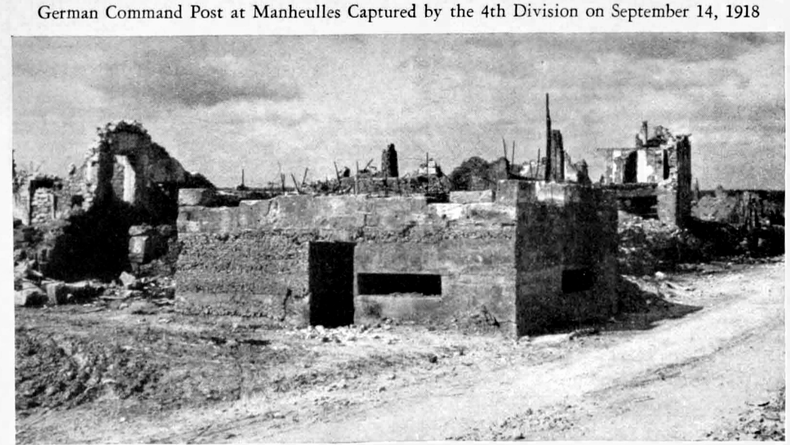
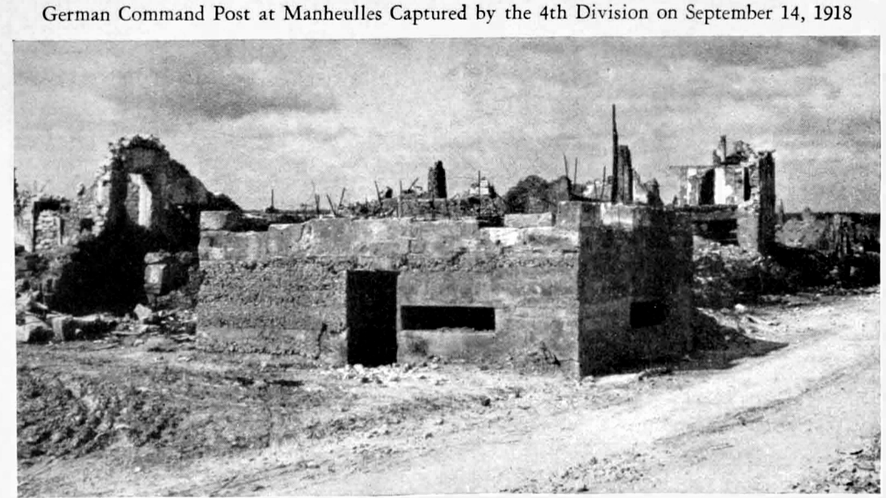
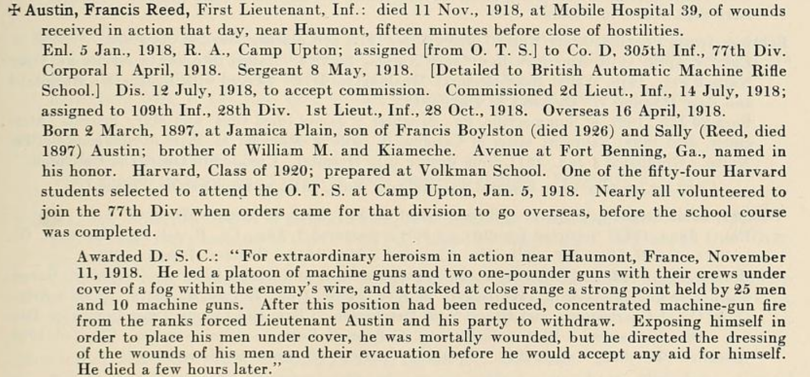
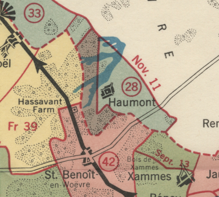

CC-BY-SA
CC-BY-SA
The final attack on 11-11 morning is generally considered to be even more pointless, gratuitous slaughter than the previous 4 years were. The offered terms specified an Armistice time of 11AM on 11-11, as a deadline for negotiations, so the time of possible cessation was known in advance. The Armistice was signed at 5:10 AM, and announced on Eiffel Tower radio shortly thereafter in French (dated 05 hr 00), and in English at 6:14. (This was sent in plain language, not code; authentication was implicit - Eiffel radio was the biggest station in the region, impossible to jam; all the radiomen would have known its sound.)
On some sectors, the day's advance was canceled, and then un-canceled: it was important that the Germans went home knowing they were beat in the field, not just in negotiations, to liberate a few cities if possible. Artillery accelerated their firing towards the cease-fire time, as fired ammunition would be much lighter to load up than unfired. (Some supposedly shifted there aim humanely to where they thought no one was to limit the harm.)
For #WW100 Armistice Day, let´s remember those cut down that day in particular. Since I'm sitting in Boston, I'll focus on Massachusians, where they fell that day, and what their units were doing.
After the success of the Sept-October Meuse-Argonne offensive, which reversed Germany's gains in their spring last-chance offensive, the allies were reorganizing, and preparing for a final push to Metz (and perhaps the Rhine?). It was scheduled for mid November -- Nov 14th in the center, Nov 11th on the right, with harassing raids in the meantime to stay in contact. But as Armistice talks picked up - after Austria made separate peace - they noticed the Germans were retiring to new positions with slightest provocation, sometimes with none.

Plan of Proposed American-French Attack, Nov 14, 1918 (ABMC, Sect.3 p 115)
"Early in November the Allied attacks, covering almost the entire front from the Meuse River to the North Sea, produced great disorganization in the German forces. ... On November 9, while the Armistice negotiations were in progress, urgent orders were issued by Marshal Foch, the Allied Commander-in-Chief, directing that the enemy be pushed all along the Western Front and that be be given no time to rest or reorganize his troops." 1
The allied order of battle Northwest to Southeast along the western Front
AEF is center-right in Allied lines, Meuse-Argonne operation, between GAC (Reims->Sedan axis) to left and GAE (Moselle) to right. AEF sector divided between 1st and 2nd Armies (as of 12 Oct), left to right.
2
US 1st Army has Fr. Fourth to left, US 2nd Army to right.
"5. OWN SITUATION AT BEGINNING OF TIlE DAY: The First Army advanced its line with the following 11 divisions in front from left to right:
Corps / Divs (line) / Divs (Corps reserve)
V III [Fr*] II Colonial Corps
77-2-89 90-5-32 15*-79-26-10*-81
42 1 -(The 3d, 29th, 36th, 78th, 80th, and 6th Divisions were in army reserve.)
"6. OWN CHANGES, MOVEMENTS AND ACTION DURING TIlE DAY: Movement of 80th Division to army reserve completed. Movement of 1st Division to III Corps Reserve continued.
(* Note - 1st Div, recently retired from left of line, supposedly moving from from V Corps Reserve to III Corps Reserve, but instead is surged toward Sedan only to be pulled up short to allow Fr 4th Armée to take Sedan.*)
Operations of First Army, November 1-11, 1918; ABMC Sect 4, p 186
CMH Pub 77-6, Map_12, Meuse Argonne Nov 1stArmy, edited to correct Div 26 typo
(Map note: Fr XVII Corps as on map 1 Nov quickly reorganizes as Fr II Col. Corps during 6 Nov., and Fr XVII Corps takes charge of Second Army' left flank, in contact on Fr II Col Corps's right flank.)
Corps / Divs (line) / Divs (Corps reserve)
Fr XVII IV VI
33 28,7 92
- 7th Bde (pioneers & Engrs)(Army reserve: 4th (less 7th Bde), 35th Divs "in Area"; 88th Army reserve)
Nov 10-11, Second Army participates in attack northeast of Pont-a-Mousson. Nov 10, at 7 AM the Second Army begins attack.(Note 4) Its right, the VI Corps (Menoher), attacks east of the Moselle, driving in enemy outposts and occupying Bois de Fréhaut, Bois de la Voivrotte, and Bois de Cheminot. Its center, the IV Corps (Muir), pushes forward to general line extending from the Bois des Haravillers to the Fme des Hauts-Journaux. Marimbois Fille and Bois de Dommartin are occupied. Its left, the Fr XVII Corps (Hellot), occupies Bois de Marville, Bois les Hauts-Epines; enters Marcheville-en-Woevre and penetrates the enemy position in the Bois d'Harville. Nov 11, the advance of the right corps is halted by enemy artillery and machine-gun fire; the center corps approaches Bois Bonseil, and the quarry west of Rembercourt, and attacks Mon Plaisir Fme. The left corps occupies Butgneville, St-Hilaire, and Chateau et Ferme d' Aulnois. At 11 AM the armistice terminates hostilities. (Note 4) The right boundary of the army, extreme south, is modified where it crosses the Moselle near Villey·le-Sec so that it follows the river to Plerre-la-Trelche, then proceeds to Blcqueley, Gye, and Bulllgny (all excl)." [^CMH-23-1]
This list is compiled from GOLD STAR RECORD OF MASSACHUSETTS IN THE WORLD WAR ( Vol II)3, selecting only those Massachusians listed as Killed In Action (KIA; or Died of Wounds the same day) on 11-11, the date of Armistice, whose lives were sacrificed by Generals who knew Armistice was about to be or already signed, to make the point that Germany was defeated on the battlefield as well as "at home". (See e.g. PPT Sapper thread and lives-wasted.)
In order left to right on the line, since we only know time of day for two of these.
Two US divisions, 37th Div and 91st Div, and 53d Art.Bde, were operating under (respectively) Fr. XXXIV and Fr.XXX Corps, French Army of Belgium, Group of Armies Flanders / Grand Army of Flanders, King of Belgians in titular command (and the French Chief of Staff in de facto command), in Belgium, Ypres-Lys offensive, 28 Oct - 11 Nov.
Relatively few Massachusetts soldiers were in these units, so none KIA 11-11. Mass.Comm Gold Star report 4 lists earlier KIA with these units
Allied Left Wing liberating Belgium (GAF and BEF) includes CANADIAN CORPS.
Our first entry is a bit of a mystery.
MacAlpine, Harry Douglas, Sapper, C. E. F.: killed in action 11 Nov., 1918.
Enl. 25 Feb., 1917, 1st W. S. Royal Engrs., Canadian Army.
Born 2 March, 1887, at Bear River, N. S., son of Henry Judson and Luvenia (Hill) MacAlpine; brother of William Edward and Alfred Freeman (1st Lieut., M. C). Married Josephine Sinnott (deceased). Child: Walter Francis. Cousin of Edward E. Nickles, page 352.
(Mass.Comm.Gold-Star narrative 5)
A Greater Bostonian (apparently of Somerville, listed under Middelsex County), possibly with a Nova Scotian wife and other Nova Scotian connections, enlists in Canadian Royal Engineers. I haven't decoded ´1st W.S.' but Canadian memorial records assign Sapper H.D.MacAlpine to "Inland Water Transport" (IWT) which is under/grouped as "Inland Waterway and Docks" (IW&D, sometimes IWTD), which includes narrow-gauge RR and canal-barge ambulances & hospital ships, as well as cargo barging for RE. Classed as "Imperial service outside CEF" in some Canadian statistics, so apparently CRE outside of Division combat engineer Co's seems to be drafted into BEF RE? IWT/IW&D would be Horizontal Engineering or Service of Supply in our nomenclature?
He is sometimes indexed as McAlpine. Only the Mass.Commission6 source says KIA, others say Unknown or died of war only, very unclear.
Buried: Longuenesse (St Omer) Souvenir Cemetery, Pas de Calais, France, V. E. 52. (multiple sources)
So it is unknown where he died on 11-11, and what unit he was with; quite logically it would be Canadian Corps in BEF taking Mons on 11-11, but he could have been with CEF in Siberia, or he could have been elsewhere with Royal Engineers, or with other BEF troops. (RE IWT was very active in Mesopotamia and Italy.)
If he fell at Mons, as is somewhat likely for a Canadian KIA on 11-11, being with Canadian 2nd Div or 3rd Div would be most plausible. Troops actually in Mons were 7th Canadian Infantry Brigade (CIB; the RCR, PPCLI, 42d Montréal Bn, and 49th Bn). There was only 1 Canadian KIA in the city on 11-11, but was not our Bostonian-Canadian MacAlpine He could have fallen on the approach, or elsewhere in vicinity with 2nd & 3rd Can Divs?
His (C)RE specialty IWT was supposedly (partially wholly) drafted into Durham Light Infantry (DLI), who were also near Mons, but were rotated out prior to Armistice.
Canadian links for MacAlpine -
Severance, Annie Love, d/o Mrs. Margaret Elizabeth Severance married at Melrose, Mass., 19 April 1913, to Harry Douglas MacAlpine, Somerville, Mass., s/o Henry MacAlpine. [8 May 1913 write up] - The Register, Berwick, Kings Co., Nova Scotia - 1913 Vital Statistics Published on Thursday"
Regarding IWT, we find
In April 1918, Canadians with the Royal Engineers Inland Water Transport were drafted to the Durham Light Infantry ... Filling the Ranks: Manpower in the Canadian Expeditionary Force [https://books.google.com/books?isbn=0773549102], Richard Holt, 2017
which is confirmed by 6th Bn Durham Light Inf. History that they received a draft of men from Royal Engineers IWT&D, but that battalion was later reduced in combat to cadre for new troops, and they were distributed to other battalions by 6 Nov, so were nowhere in particular on 11-11.
Durhams History says the Durhams were in reserve from 8 Nov, so not at Mons; any 11-11 battle dead in Durhams would be died of earlier wounds (or detached to a unit in-line, or hit by deep-zone harassment).
So we don´t know where Harry served or fell; we are lucky to have any information on a Bostonian serving with Canadians and Brits at all, it seems.
US 30th Div and 27th Div are in Army Reserve and do not figure in 11-11 KIA story.
US 370th Inf Regt, "Black Devils" detached from US 93d Inf (Provisional) Div ("Colored"), has been attached to Fr 59th Div, Fr XVIII Corps, and is in line. > "Formed from 8th Inf, Ill. NG, an all-black ... militia regiment founded in the 1870s ... 'It was the only unit entirely commanded by black officers.'" (wikipedia).
This unit is not a major source of Massachusetts casualties -- African-American members of Mass. NG "Colored Troops" were in 372d Infantry, see under GAE, Fr.7th Army -- but they fought well, and should be included in a US-centric Order of Battle.
See also NG - Black History Month: Highlighting the 93rd Division in World War I and WTTW - The Forgotten Story of Illinois's Black World War I Regiment.
No US Divisions.
V Corps holds the left of 1st Army, adjacent to GAC, Fr.IV Army, which has a fresh Fr.70th Div at its right corner.
GEN Summerall, appointed in 2nd Army reorg Oct 12th, was rather aggressive. (See lives-wasted for more on him and 11-11.)

Meuse crossings by V Corps
Nov 10, the Corps relieves the I Corps on the left, and acquires the 77th Div front which extends along the Meuse from Mouzon to Pont-Maugis; ... the Fr IX Corps (Fr Fourth Army) is on the left. The Corps forces crossings of the Meuse near Pouilly and east of the Bois de l'Hospice. Nov 11, another crossing is effected at Stenay; at the time of the armistice, units of the Corps are east of the road connecting Stenay with Cervisy, along the eastern edge of the Bois de Hache, on the north and south ridge through Senegal Fme, and at Warmonterne Fme. [^CME-23-1]
2d Div HQ Fossé from Nov. 4th
2nd Div, partially across Meuse morning of 11-11
2nd div attempted Meuse at Mouzon
Hart, Charles Sylvester: killed in action 11 Nov., 1918 [in attack along the Meuse between Muzon and Inor].
Enl. 26 Sept., 1917, R. A., Medical Dept., Fort Ethan Allen; trans. 20 Nov., 1917, to Med. Dept., Base Hospital 66; 19 July, 1918, to Medical Detachment, 2d Engrs., 2d Div. Overseas 18 Dec, 1917.
Born 15 June, 1897, at Newbury, N. H., son of Fred S. (deceased) and Hannah S. (Muzzey) Hart of Holyoke, 1926; brother of Clarence F.
Jeweler.
Square at Lancaster, N. H., named in his memory.
(Mass.Comm.Gold-Star narrative 7)
From the information given, we can not tell where along 2nd Div's line Medic Hart fell, but it's a narrow line.
Division history says -
"Nov 10-11, elements of the Div cross the Meuse east of the Bois de l'Hospice and reach the heights south of Moulins, the north and south ridge through Senegal Fme, and Warmonterne Fme." [CMH-23-2]
The 89th Division History quotes Pershing's final AEF situation report for the November offensive -
By the evening of the 4th, our troops had reached Laneuville, opposite Stenay, and had swept through the great Foret de Dienlet, reaching the outskirts of Beaumont. . . .
On the night of the lOth-11th and the morning of the 11th, the Fifth Corps, in the First Army, forced a crossing of the Meuse east of Beaumont and gained the commanding heights within the reëntrant of the river, thus completing our control of the Mense River line. At 6 A. M. on the 11th, notification was received from Marshal Foch's headquarters that the armistice had been signed and that hostilities would cease at 11 A.M.
Preparatory measures had already been taken to insure the prompt transmission to the troops of the announcement of an armistice. However, the advance east of Beaumont on the morning of the 11th had been so rapid and communication across the river was so difficult that there was some fighting in isolated portions of that front after 11 A.M."
(Note - In earlier military jargon, "reëntrant" means a reversing angle.)
Wilson, James, Jr., First Lieutenant: killed in action 11 Nov., 1918, near Beaumont.
Enl. 30 Dec, 1913, R. A., 22d Inf.; trans, to 15th Inf. Dis. 13 Aug., 1917, to accept commission. 2d Lieut., Inf., 14 Aug., 1917. 1st Lieut. 25 Aug., 1917. Assigned to 356th Inf., 89th Div. Over-seas 4 June, 1918.
Born 17 June, 1891, at South Boston, son of James S. Wilson. His mother was reported as living at Prince Albert, Saskatchewan, Can., in 1917.
(Mass.Comm.Gold-Star narrative 8)
1LT Wilson is noted in 89th Division history Honor Roll as Co G, 356th Inf, which in WW1 division would put him in 2d Bn, 356th.
Beaumont-en-Argonne is shown on ABMC map of 2nd and 89th's Meuse crossings, west of Létanne and Pouill-sur-Meuse. (Note, this one map is rotated so North is down and East is left!) Beaumont would have been a Rear Area on 11-11 -- on the 2nd Div side of the line, barely -- but the crossing is considered to have spring from Beaumont, so we may presume 1LT Wilson fell at the front, on the crossings. The map shows 2d Bn, 356th crossing the footbridges to Bois d'Alma Gisors - crossing the supposed Division boundary! - so we expect they're heading for Sénégal Farm and Moulins.
Map ABMC - Crossing Meuse 2d+89th Divs 9-11 Nov, showing Beaumont
"Nov 2-5, Div advances through Barricourt, Tailly, Nouart, Beauclair, and Beaufort, reaching the Meuse from Laneuville-sur-Meuse to Pouilly. Nov 7, Div relieves units of the 2d Div as far as a point south of Létanne. Nov 10, units cross the Meuse west of Pouilly and reach the high ground north of that place. Nov 11, divisional units cross the Meuse at Laneuville-sur-Meuse, occupy Stenay and a position northeast thereof; units on the left of the Div occupy the Bois de Hache and Autreville." 9
Map ABMC - Meuse crossings of the 89th Div

Flooded Meuse River near Stenay, 11 Nov

89th Div in Stenay two minutes before cease-fire
Davitt, William F., First Lieutenant, Chaplain: killed in action 11 Nov., 1918, near Ecurey, 75 minutes before the armistice.
Commissioned 1st Lieut., Chaplain, 6 Jan., 1918, and assigned to 120th M.G. Bn., 32d Div.; trans, to 125th Inf., 32d Div. He had volunteered as Chaplain, K. of C, at outbreak of war, and was assigned Oct., 1917, to Camp McArthur, Tex. Overseas 10 Feb., 1918.
Born 8 Dec, 1886, at Holyoke, son of Lawrence (born in Canada) and Mary (Kane, born in Ireland, died 1920) Davitt; brother of James L. (1st Lieut., 94th Aero Sq., A. E. F.) of Willimansett. Holy Cross College, 1907; Grand Seminary, Montreal, Can. Priest, St. Anne's Parish, Lenox. One of the last American officers killed in the World War. Post 625, V. F. W., Chicopee, named in his honor, also Fr. Davitt Council, K. of C, Lenox, and a square in Worcester.
Silver Star Citation 3 June, 1919: "For gallantry in action near Courmont, France, 4 Oct., 1918, in burying the dead under heavy shell fire."
Cited in G. O. No. 26, 20 Nov., 1918: "For faithful and conscientious performance of duty and for extreme coolness under shell fire in the performance of his duty as Chief Burial Officer, 5th Corps, during the Meuse-Argonne operations.
Croix de Guerre with palm: "During the advance from the Ourcq to the Vesle from July 31 to Aug. 6, 1918, he carried out his duties heedless of danger and without interruption under a violent fire. By his comforting words and his fine example of abnegation and bravery he encouraged the men of his regiment who were advancing to the assault."
Recommended for D. S. C: "During the advance from Courmont to Mount St. Martin, Chaplain Davitt worked single-handed without ceasing for anything, collecting the dead of his Division (32d) and looking after the burial. He did this under violent fire, to which he apparently paid no attention. While doing this work he stopped to encourage with cheerful words and advice the enlisted men along the line who also were under fire. The results of his work were 125 American soldiers buried, many wounded cared for, and soldiers in the line encouraged."
Cited for bravery August 6, 1918, during operations along the Vesle River: "To rescue 40 wounded soldiers who were temporarily isolated from their command, he led a party of volunteers through a hail of machine gun bullets. All were rescued and returned to their command without the loss of a single man."
Cited for bravery Oct. 20, 1918, during the Argonne offensive: "To rescue three wounded soldiers, he leaped over the top of the trench, and, under enemy machine-gun fire, dragged them to safety one by one."
Name appears on Memorial Tablet, State House.
(Mass.Comm.Gold-Star narrative 10)

Ecurey behind 32nd Div lines but visible down valley from across creek
HQ 32nd Div at Vilosnes-sur-Meuse Nov.9-17 11
Ecurey is 2 miles behind the lines of Nov 10-11, would have been in clear view, up the valley, to artillery across the river, and where troops would likely have fallen in the previous days.
At 0945 AM, the Armistice was already signed, the English translation of the cease-fire radio message had been received at wireless-equipped HQs for 3 1/2 hours, word of 11 am cessation filtering forward by field telephone and runner. Did the Reverend Lieutenant not get the word? Or see no reason to wait to resume his sacred work?
"Nov 9, ... leading elements ... relieve units of the Fr 15th Colonial Div at Peuvillers and 1.5 km east of Breheville. Night Nov 9/10, the remainder of the Div crosses the Meuse ... enters line east of Breheville and relieves part of the 128th Inf. Nov 10, Div (less Arty) pursues, ... advances so that part ... reaches a line from the Bois Dombras to the Cote du Mont but later withdraws, Div finally holds a line from 3/4 km south of Peuvillers, along the road from Damvillers to Jametz, the southwestern edge of the Bois Demange, the woods west of Thinte Rau, to 2 1/4 km south of Jametz; Fr 15th Colonial Div on right, 5th Div on left." 12
"Peuvillers. Early on November 9 troops of the 32d Division attached to the 5th Division relieved units of the French 15th Colonial Division who had occupied this village the previous day. East of the village on November 10 the 32d Division had considerable fighting." 13

32d Ecurey gaps in line
Center of Fr II Col Corps, showing US 79th and 26th Divs at Ville-devant-Chaumont
The assult on this town claimed 3 from Massachusetts on 11-11, 2 the prior day, and likely more died of wounds later. Proceeding left to right, we remember first the fellow with the 79th Div.
ABMC: 79th Div map, 11-11
Molleville Farm was the 79th Division Headquarters from November 9 to 11." 14
Near 79th DivHQ Vacherauville 31 Oct (a prior HQ)
Lammers, John F.: killed in action 11 Nov., 1918 [near Ville-devant-Chaumont].
Ent. 30 May, 1918, 152d D. B.; trans. 22 June to Co. D, 316th Inf., 79th Div. Overseas 9 July, 1918.
Born 19 Jan., 1895, at Roxbury, son of John D. (deceased) and Annie S. Lammers of Lynnfield Center. Clerk.
79th Div -
Nov 9-11, Div attacks, captures Crépion, Wavrille, Gibercy, and Ville-devant-Chaumont, and reaches a line from Chaumont-devant-Damvillers (incl) , along the high ground 1 1/2 km west of Romagne-sous-les-C6tes, to 1 1/2 km east of Gibercy. 15
Our next two are from the same Machine Gun Co, 104th Infantry Regiment, 26th (Yankee) Division:
Hamsworth, Frederick B.: killed in action 11 Nov., 1918. (aka Frederick Blatchford Horsch) [at the capture of Ville-devant-Chaumont].
Enl. 26 May, 1917, M. G. Co., 2d Inf., Mass. N. G. (M. G. Co., 104th Inf., 26th Div.). Wounded in action 16 Oct., 1918. Overseas 27 Sept., 1917.
Born 3 Sept., 1893, at Newburyport, son of John H. and Mary E. (Thurlow) Horsch.
Street junction in Haverhill named in his memory.
Kehoe, Hugh Lawrence: killed in action 11 Nov., 1918 [at Ville-devant-Chaumont].
Enl. 22 May, 1917; reported for duty 25, July; mustered 30 July, Co. K, 8th Inf., Mass. N. G.; trans, to M. G. Co., 104th Inf., 26th Div. Overseas 6 Oct., 1917.
Born March, 1896, at South Williamstown, son of Patrick S. and Hannah E. Kehoe; brother of Mary A. and James P. of Nova Scotia, John S. of Newtonville, and Lewis S. of Allston.
Hospital attendant, employed at School for the Feeble-Minded at Waltham. Of Waverley.
(Mass.Comm.Gold-Star narrative 16)
104th Inf, 26th Div -
"Early in the morning of Nov. 11, the 1st and 2d Battalions (reserve and support respectively) were ordered to move to the eastern edge of the Bois du Wavrille, to attack in an easterly direction through Herbebois. The 3d Battalion was to hold its position, reached the day before, and to attack from there at the same time in the direction of Côte 265 (Hill 265). With the battalions ready for the jump off, an order was received fifteen minutes before the zero hour to hold their position and not to advance. Later, shortly before 11 o'clock, the infantry was ordered forward. An advance was made of between 200 and 300 yards eastward, straightening out the line along the Azannes-Beaumont road, which 1st Battalion reported seeing position was held at 11 o'clock." 17

ABMC Ville devant Chaumont Nov 1918
In addition to these 3 listed at Ville-devant-Chaumont, there were 2 others of 26th Div YD also KIA "near Ville-devant-Chaumont" on 10 Nov, but not listed here per 11-11 focus for this particular memorial.
@MENGhistory's 11-11 posts on FB -

HQ 26th at Bras
"The total casualties of the 33d, 29th, 79th and 26th Divisions during their fighting on and near the Heights of the Meuse were almost 15,000 officers and men." 18
"Nov 3, (26th) Div completes the relief of the Fr 26th Div and assumes command of the Neptune Sector on a front extending from 1 km north of Beaumont to 1 3/4 km west of Flabas; Fr 10th Colonial Div on right, 79th Div on left. Nov 8, the enemy retreats and the Div, pivoting on its right, advances through Flabas to the line: Sous-la-fosse-à-terre, Flabas, heights north of Flabas. Nov 9, Div advances east to a line from 1 1/2 km northeast of Beaumont, along the eastern edge of la Wavrille, the ravine Ie Fond-des-Vaux, to 1/4 km west of Ville-devant-Chaumont. Nov 10, Div advances to Fme St-Andre, the eastern edge of the Bois de Ville, and Ville-devant-Chaumont (incl)." 19
Hautecourt is in the US Second Army sector, where the lines have moved past Verdun
The US 81st Div, while in US 2nd Army, was attached French II Colonial Inf Corps (abbreviated CAC or Cl), which also has French 10th Colonial Infantry Division (abbreviated DIC), to the 81st's left.
The US 81st Div is advancing in separate Battalions.
ABMC: Verdun-StMihiel overview, 81st Div
Hautecourt is beyond Moranville , just beyond northeasterly battalion(s)'s 11 Nov halt.

ABMC: 81st Div - Hautecourt Objective
Hautecourt 81st Div daily front lines
Prusak, Wladislaw: killed in action 11 Nov., 1918 [in attack on Hautecourt].
Ent. 30 May, 1918, 21st Recruit Co., General Service Inf., Fort Slocum; trans. 3 June to Co. C, 2d Corps Arty. Park, Camp Jackson; 15 June to 156th D. B.; 28 June to Co. I, 321st Inf., 81st Div. Overseas 31 July, 1918.
Born 1888 at "Porerotky," Russia; brother of Mrs. Francisca Bialkowski of Salem.
(Mass.Comm.Gold-Star narrative 20)
HQ 81st Div. - Sommedieue, Nov. 7-9; Belrupt. Nov. 9-11+ (19th?) 21
"Nov 9, Fr 10th Colonial Div relieves the Div in the left of the sector north of the Verdun-Etain road; the 81st Div attacks toward the northeast, enters Manheulles and the wooded areas of les Chairs-Chenes and la Noire-Haie, captures Moranville, and occupies the northern edge of the Bois de Moranville. Nov 10, Div captures Abaucourt and Ie Grand-Cognon and enters Grimaucourt-en Woevre. Nov 11, Div resumes the attack, captures Grimaucourt-en-Woevre and le Petit-Cognon, and advances to a line from a point 1 km southwest of Hermeville to Abaucourt; minor gains are made northeast of Manheulles and in the southwestern comer of the Bois de Manheulles." 22
"on Nov. 9 attacked on a front extending from Eix to Fresnes, continuing on the 10th and 11th in conjunction with the advance of the 33d Division on the right. At the moment of the Armistice an assault was being delivered upon the strongly fortified village of Hautecourt and the Bois de Manheulles." 23
"Moranville and the Bois de Moranville. These places in the outpost zone of the Hindenburg Line were captured by the 81st Division on November 9 in spite of determined hostile resistance. Abaucourt. Captured on November 10 by the 81st Division after severe fighting. Le Grand Cognon. This wooded area was captured by the 81st Division on November 10 after a hard fight. Grimaucourt-en-Woëvre. Captured by the 81st Division on November 10 but not held that night. The next day the division pushed forward through the town and about 1 mile beyond it. "No attack was made here on November 10 but on the llth the 81st Division met resistance in its efforts to advance in the Bois de Manheulles. Its front line was in the wood at the time of the Armistice." 24
The battalions of 81st Div were separated in two engagements. The other battalions'[ objective, Manheulles has pictures.

 

(Second Army officially formed Oct. 12.)
"Early in November ... The Second Army was therefore ordered to keep close watch of the enemy for any indications of a withdrawal. At that time the Second Army front was held, in order from right to left, by the VI Corps with the 92d Division in line, the IV Corps with 7th and 28th in line, and the French XVII Corps with the American 33d Division in line. ... The nearest part of the sector held by the 28th Division was at the woods seen in the distance to the right." 25
"On November 1, General Pershing issued instructions on the course to be followed by the Second Army in the event of a German retirement on its front. Because of the Austrian Armistice. new dispositions were being ended by the enemy between the Meuse and Moselle Rivers. General Pershing, on November 5, ordered the Second Army to advance between the Moselle River and Etang de Lachaussee towards Gorze and Chambley, in anticipation of a probable enemy withdrawal which, in fact, got under way the next day." 26
Austin, Francis Reed, First Lieutenant, Inf.: died 11 Nov., 1918, at Mobile Hospital 39, of wounds received in action that day, near Haumont, fifteen minutes before close of hostilities.
Enl. 5 Jan., 1918, R. A., Camp Upton; assigned [from O. T. S.] to Co. D, 305th Inf., 77th Div. Corporal 1 April, 1918. Sergeant 8 May, 1918. [Detailed to British Automatic Machine Rifle School.] Dis. 12 July, 1918, to accept commission. Commissioned 2d Lieut., Inf., 14 July, 1918; assigned to 109th Inf., 28th Div. 1st Lieut., Inf., 28 Oct., 1918. Overseas 16 April, 1918.
Born 2 March, 1897, at Jamaica Plain, son of Francis Boylston (died 1926) and Sally (Reed, died 1897) Austin; brother of William M. and Kiameche. Avenue at Fort Benning, Ga., named in his honor. Harvard, Class of 1920; prepared at Volkman School. One of the fifty-four Harvard students selected to attend the O. T. S. at Camp Upton, Jan. 5, 1918. Nearly all volunteered to join the 77th Div. when orders came for that division to go overseas, before the school course was completed. 
Awarded D. S. C: "For extraordinary heroism in action near Haumont, France, November 11, 1918. He led a platoon of machine guns and two one-pounder guns with their crews under cover of a fog within the enemy's wire, and attacked at close range a strong point held by 25 men and 10 machine guns. After this position had been reduced, concentrated machine-gun fire from the ranks forced Lieutenant Austin and his party to withdraw. Exposing himself in order to place his men under cover, he was mortally wounded, but he directed the dressing of the wounds of his men and their evacuation before he would accept any aid for himself. He died a few hours later."
(Mass.Comm.Gold-Star narrative 27)
PA NG 28th Div movements -
"Nov 4, the front is advanced to the northern edge of Bois des Haudronvilles Bas. Nov 6, the Fr XVII Corps is on the left. Nov 10-11, [28th] Div advances to the Bois Dommartin, Marimbois Fme, the northern edge of the Bois des Haravillers, and the Fme des Hauts-Journaux." 28
"American IV Corps---East edge of Bois des Rappes to Bois des Haravillers, to advance toward Vionville ... At 7 a. m., on November 10, the Second Army attacked. ... The IV Corps, in the center, pushed forward to a general line extending from Bois des Haravillers to Les Hauts-Journaux Farm. ... . On November 11, ... [T]he IV Corps approached the Bois Bonsell and the quarry west of Rembercourt, and attacked Mon Plaisir Farm." 29
 

"Haumont-lès-Lachaussée. This village was lightly held by the Germans following the St. Mihiel attack. The 42d, 89th and 37th Divisions raided it several times and the 28th Division occupied it on two different occasions; from October 24 to 29, and again from November 9 to 11." 30
Other 28th Div objectives included
"Bois de Dommartin. Located about 600 yards in front of the American lines after the St. Mihiel operation, this little wood was the scene of many small but bitter fights in which at different times the 89th, 37th and 28th Divisions, in that order, participated. It was occupied by the 28th Division on November 10 and held until after the Armistice."
"Dommartin-la-Chaussée. Site of a large German supply depot. The town was in the main line of resistance of the Hindenburg Line. Attempts of the 28th Division to capture it on November 10 were defeated with considerable losses."
"Mon Plaisir Farm. A strongly organized place in the Hindenburg Line which was attacked at different times after the St. Mihiel offensive by the 78th and 7th Divisions. The 28th and 89th Divisions sent patrols to it. The farm was still in the hands of the Germans when the Armistice became effective."
"Marimbois Farm. This farm was in German hands at the close of the St. Mihiel offensive. From September 16 on patrols of the 42d and, later, of the 89th and 28th Divisions frequently clashed with the enemy there. It was occupied by the 28th Division on November 9 and held until the Armistice."

Mon Plaisir Farm in winter 18 19
African-American Massachusetts National Guard members served overseas with US 372nd Infantry, nominally of 93d Div ("Provisional", "Colored"), but both 371st Inf and 372d Inf fought with the French, during this Operation, in the Fr.157 Div; and their sibling 369th Inf - the famous "Harlem Hell Fighters," 15th NYNG - in the Fr.161st Div. This places them at the right end of the line, in Alsace near Switzerland. They were rotated out of line weeks before armistice, so no 11-11 KIA; but a half dozen Massachusians and many more from elsewhere in 371st & 372d fell at Bussey Farm in September, and 372d's Corporal Freddie Stowers's Medal of Honor for actions at Hill 188 in the Champagne Marne Sector was awarded 70+ years late.
Two Massachusian NCOs died quite possibly of Spanish 'flu in October while out of line. (The rear and hospitals were actually worse for the 'flu, because that's where the sick people were.)
(Which brings us to the right end of the Line and the end of this tour of the line.)
Copyright 2018, William D. Ricker, and licensed CC-BY-SA  .
.
Special Thanks to
The canonical works consulted and block-quoted with footnotes were Massachusetts and USA Army official histories, and OOB maps, in the public domain (PD) or US Govt Copyright (which amounts to PD).
Noted but not used for this project - the French equivalent of CMH official History and OOB is the official history, Les Armées Françaises dans la Grande Guerre, by Ministère de la Guerre, État-Major de l'armée - Service Historique. Paris: Imprimerie Nationale. 1922-1939, published as a serial. Available online from Bibliothèque nationale de France's digital library Gallica. OOB is Tome X, Ordres de Bataille, in two volumes. Prior volumes are the official history by year and theatre, and the associated annexes of Orders and Messages. (Note, BnF Gallica has restrictions on commercial or performative non-commercial reuse from their collection, despite the original documents being in the public domain.)
Other sources that are linked in the text -
CMH Pub 23-24 World War I Historic Reference Book, American Battle Monuments Commission (Available on ABMC.gov) (Prepared by the ABMC but also issued as CMH Pub 23-24)↩
CMH Pub 77-8 THE U.S. ARMY CAMPAIGNS OF WORLD WAR I COMMEMORATIVE SERIES, MEUSE-ARGONNE 26 SEPTEMBER–11 NOVEMBER 1918, Richard S. Faulkner,↩
Report of the Commission on Massachusetts' Part in the World War: GOLD STAR RECORD OF MASSACHUSETTS IN THE WORLD WAR ( Vol II), 1929↩
Report of the Commission on Massachusetts' Part in the World War: GOLD STAR RECORD OF MASSACHUSETTS IN THE WORLD WAR ( Vol II), 1929↩
Report of the Commission on Massachusetts' Part in the World War: GOLD STAR RECORD OF MASSACHUSETTS IN THE WORLD WAR ( Vol II), 1929↩
Report of the Commission on Massachusetts' Part in the World War: GOLD STAR RECORD OF MASSACHUSETTS IN THE WORLD WAR ( Vol II), 1929↩
Report of the Commission on Massachusetts' Part in the World War: GOLD STAR RECORD OF MASSACHUSETTS IN THE WORLD WAR ( Vol II), 1929↩
Report of the Commission on Massachusetts' Part in the World War: GOLD STAR RECORD OF MASSACHUSETTS IN THE WORLD WAR ( Vol II), 1929↩
CMH Pub 23-2 ORDER OF BATTLE OF THE UNITED STATES LAND FORCES IN THE WORLD WAR American Expeditionary Forces: Divisions (Volume 2)↩
Report of the Commission on Massachusetts' Part in the World War: GOLD STAR RECORD OF MASSACHUSETTS IN THE WORLD WAR ( Vol II), 1929↩
CMH Pub 23-2 ORDER OF BATTLE OF THE UNITED STATES LAND FORCES IN THE WORLD WAR American Expeditionary Forces: Divisions (Volume 2)↩
CMH Pub 23-2 ORDER OF BATTLE OF THE UNITED STATES LAND FORCES IN THE WORLD WAR American Expeditionary Forces: Divisions (Volume 2)↩
CMH Pub 23-24 World War I Historic Reference Book, American Battle Monuments Commission (Available on ABMC.gov) (Prepared by the ABMC but also issued as CMH Pub 23-24)↩
CMH Pub 23-24 World War I Historic Reference Book, American Battle Monuments Commission (Available on ABMC.gov) (Prepared by the ABMC but also issued as CMH Pub 23-24)↩
CMH Pub 23-2 ORDER OF BATTLE OF THE UNITED STATES LAND FORCES IN THE WORLD WAR American Expeditionary Forces: Divisions (Volume 2)↩
Report of the Commission on Massachusetts' Part in the World War: GOLD STAR RECORD OF MASSACHUSETTS IN THE WORLD WAR ( Vol II), 1929↩
Report of the Commission on Massachusetts' Part in the World War: History (vol I), 1929↩
CMH Pub 23-24 World War I Historic Reference Book, American Battle Monuments Commission (Available on ABMC.gov) (Prepared by the ABMC but also issued as CMH Pub 23-24)↩
CMH Pub 23-2 ORDER OF BATTLE OF THE UNITED STATES LAND FORCES IN THE WORLD WAR American Expeditionary Forces: Divisions (Volume 2)↩
Report of the Commission on Massachusetts' Part in the World War: GOLD STAR RECORD OF MASSACHUSETTS IN THE WORLD WAR ( Vol II), 1929↩
CMH Pub 23-2 ORDER OF BATTLE OF THE UNITED STATES LAND FORCES IN THE WORLD WAR American Expeditionary Forces: Divisions (Volume 2)↩
CMH Pub 23-2 ORDER OF BATTLE OF THE UNITED STATES LAND FORCES IN THE WORLD WAR American Expeditionary Forces: Divisions (Volume 2)↩
Report of the Commission on Massachusetts' Part in the World War: History (vol I), 1929↩
CMH Pub 23-24 World War I Historic Reference Book, American Battle Monuments Commission (Available on ABMC.gov) (Prepared by the ABMC but also issued as CMH Pub 23-24)↩
CMH Pub 23-24 World War I Historic Reference Book, American Battle Monuments Commission (Available on ABMC.gov) (Prepared by the ABMC but also issued as CMH Pub 23-24)↩
CMH pub 23-6 United States Army in the World War, 1917-1919, Organization of the American Expeditionary Forces, Volume 1↩
Report of the Commission on Massachusetts' Part in the World War: GOLD STAR RECORD OF MASSACHUSETTS IN THE WORLD WAR ( Vol II), 1929↩
CMH Pub 23-2 ORDER OF BATTLE OF THE UNITED STATES LAND FORCES IN THE WORLD WAR American Expeditionary Forces: Divisions (Volume 2)↩
CMH pub 23-6 United States Army in the World War, 1917-1919, Organization of the American Expeditionary Forces, Volume 1↩
CMH Pub 23-24 World War I Historic Reference Book, American Battle Monuments Commission (Available on ABMC.gov) (Prepared by the ABMC but also issued as CMH Pub 23-24)↩